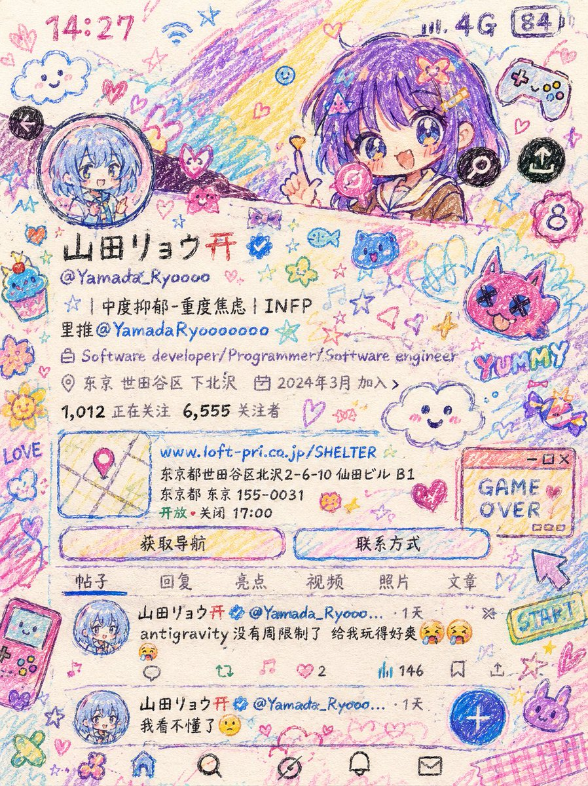

山田リョウ⛩️
@Yamada_Ryoooo
把上传照片转化成一种可爱混乱的儿童蜡笔涂鸦插画风格。
整体像是彩铅+蜡笔+手账贴纸+MS Paint涂鸦的结合。
使用：粗糙线条、抖动边缘、不均匀上色、纸张纹理、彩铅叠色、蜡笔颗粒感、故意幼稚但很有灵气的画风。人物变成Q版萌系二次元风格，大眼睛，夸张表情，可爱活泼。
背景加入大量doodle：
爱心、星星、糖果、笑脸云朵、小花、贴纸、游戏U元素、乱涂乱画符号。
颜色以：粉色、蓝色、紫色、黄色、薄荷色为主。整体氛围：可爱、混乱、梦幻、少女感、游戏宅手账风、互联网 kawaii, Kawaii aesthetic不要精致，不要高级商业插画感，不要真实渲染，不要干净线稿，保留“手绘失败感”和“乱涂鸦感”。
